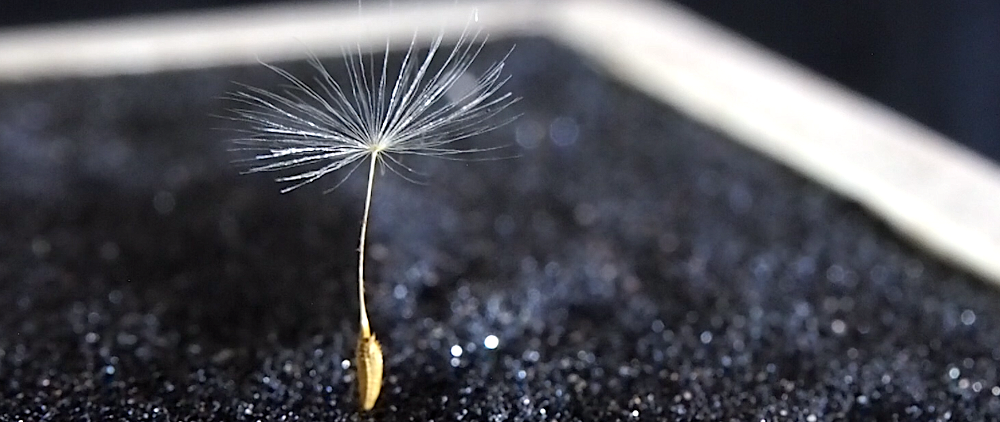

クリエイティビティとテクノロジーで、感動を生む!
私は、このように感動を生ませる方法を研究するために、修士課程に進みました。2022年9月に卒業する予定です。現在はヒューマンインタラクションやユーザーエクスペリエンス関連の仕事に就こうと思っています。
静電気を用いてタンポポの冠毛をまるで生きているかのように動かす研究を行い、現在はどの言語でも会話のファシリテーションを行えるロボットを作製しています。
HTML/CSS/JavaScriptやPython、マイクロコントローラ、3Dプリンタを使った経験があります。
国際学生クリエイティブアワードで受賞をしたり、学会で研究を発表したこともあります。